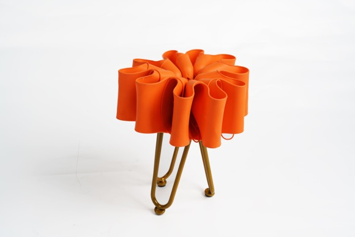
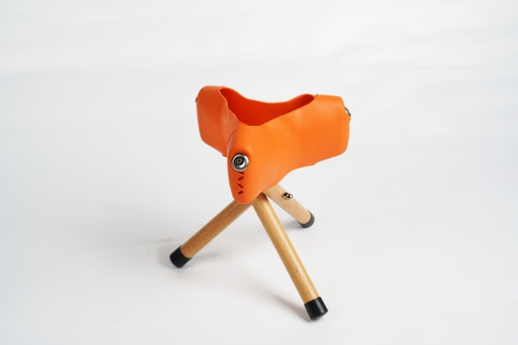

POPKEA: ORIGAMI


这个凳子通过相同元素的三次重复实现完成。三个完全相同的橡胶材质IKEA海绵架凳面与三根完全相同的榉木材质凳腿相结合，组成一个可折叠可承重的便携式凳子。凳面的承重由IKEA海绵架自身的张力承担，通过其橡胶材质的弹力固定三条凳腿，实现在橡胶弹性范围内的完全承重。三条凳腿中间由螺母固定，张开形成三角形稳定结构，稳定且承重力强；闭合体积小，易于携带。
十个完全相同的橡胶材质IKEA海绵架凳面与三个完全相同的不锈钢支架凳腿相结合，组成一个具有花朵绽放造型的编织工艺的凳子。凳面由海绵架相互嵌套编织组成，中间主要承重的部分由弹力绳两两连接编织而成，使质地较软的橡胶在凳面中央形成较硬的承重区域。凳腿由三个造型元素与海绵架相似的不锈钢支架组成，三角形的组合方式较为稳定且承重。